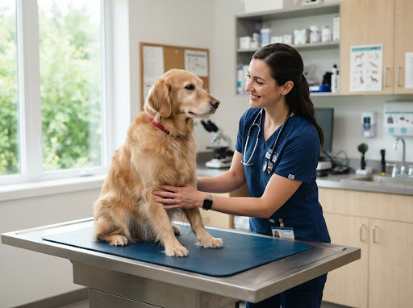
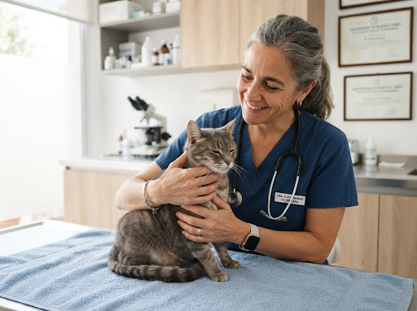
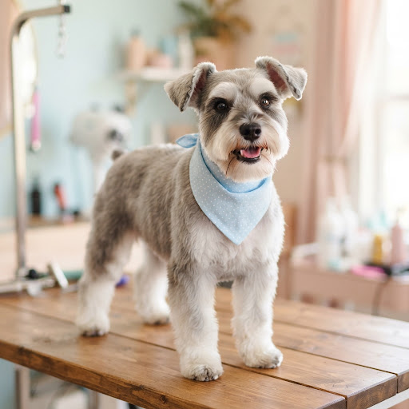

Cuidamos a tu mascota como si fuera nuestra
Clínica, vacunas, cirugía y peluquería en el corazón de Villa Crespo. Profesionales que escuchan, atienden sin apuro y con todo el amor y rigor médico que tu compañero merece.

Dra. y equipo dedicados
Atención con paciencia, empatía y dedicación exclusiva a cada mascota.
Servicios diseñados para su bienestar diario
Desde el primer plan de vacunación de cachorros hasta cirugías y cuidados geriátricos avanzados, todo bajo un mismo techo.
Consultas Clínicas
Diagnóstico general riguroso, chequeos preventivos periódicos, pediatría de cachorros y gatitos, y seguimiento de patologías crónicas o geriátricas.
- check_circle Atendido por médicas veterinarias matriculadas
- check_circle Sin apuros: revisión exhaustiva y explicaciones claras
Vacunación y Desparasitación
Planes completos para cachorros y adultos. Vacuna séxtuple, quintuple, triple felina, antirrábica oficial obligatoria con certificado sanitario para viajes y trámites.
- check_circle Carnet sanitario oficial sellado y firmado
- check_circle Desparasitación interna y externa a medida
Cirugías y Castraciones
Quirófano equipado con anestesia inhalatoria, monitoreo multiparamétrico constante y protocolo analgesia postquirúrgica para una recuperación sin dolor.
- check_circle Castraciones programadas de perros y gatos
- check_circle Seguimiento postoperatorio directo por WhatsApp
Laboratorio y Ecografías
Ecografía abdominal, ecocardiograma, análisis de sangre, orina y citologías. Diagnóstico por imágenes con profesionales dedicados y resultados rápidos en el día.
- check_circle Ecografías con turno previo
- check_circle Informes médicos detallados con imágenes digitales
Peluquería Canina & Spa
Baños higiénicos, terapéuticos y con ozono, corte de raza o a tijera, deslanado profundo, corte de uñas y limpieza de oídos. Manejo amoroso sin estrés ni sedación.
- check_circle Cosmética hipoalergénica de primera línea
- check_circle Espacio climatizado y secado a temperatura controlada
Pet Shop y Nutrición
Alimentos balanceados premium y super premium (Royal Canin, Pro Plan, VitalCan), dietas medicadas, antiparasitarios oficiales (Nexgard, Bravecto, Simparica) y accesorios.
- check_circle Asesoramiento nutricional personalizado
- check_circle Envíos a domicilio en Villa Crespo y alrededores
Calculá el plan sanitario y armá tu mensaje directo
Ingresá los datos de tu mascota para conocer su esquema de vacunas y coordinar el turno por WhatsApp en un solo clic, con el texto ya redactado.
Sin intermediarios: te responde la recepción de la veterinaria en Apolinario Figueroa 299.
Profesionales que aman y respetan a los animales
Un equipo multidisciplinario con matrícula habilitante de CABA, formación continua en medicina veterinaria moderna y un trato cercano con cada familia.

Clínica médica
Directora Médica & Especialista Felina
Atención especializada en medicina interna felina y canina. Se destaca por su manejo dócil, logrando que los gatos se sientan tranquilos y seguros.
Cirugía
Cirugía General & Anestesiología
Especialista en técnicas quirúrgicas de mínima invasión, castraciones preventivas y manejo del dolor perioperatorio. Su prioridad absoluta es la seguridad del paciente bajo anestesia.

Diagnóstico por imágenes
Ecografía & Medicina Preventiva
A cargo del área de diagnóstico por imágenes ecográficas y seguimiento de planes pediátricos. Brinda contención y explicaciones claras a los tutores en cada ecografía abdominal.
Peluquería con amor & Pet Shop con entrega local
Spa y Peluquería Canina con Ozono
Baño higiénico profundo, corte de raza o a tijera según las necesidades del manto. Usamos agua templada, secadores silenciosos y champú hipoalergénico que cuida la piel de tu perro.


* Incluye corte de uñas y limpieza higiénica de oídos sin cargo adicional.
Pet Shop Oficial & Farmacia
Stock permanente de alimentos balanceados líderes, dietas de prescripción médica veterinaria, pipetas y comprimidos antiparasitarios oficiales y accesorios de paseo.
Nexgard, Nexgard Spectra, Bravecto (3 meses de protección), Simparica, Revolution y pipetas Advantage. Asesoramiento exacto según el peso de tu mascota.
Lo que dicen las familias de Villa Crespo
"Atienden a mi perro Simón desde que tenía 45 días. Luciana y todo el equipo tienen una paciencia infinita. Nunca te inventan estudios de más y te explican todo con un cariño que no se encuentra en cualquier lado."
Mariano V.
Vecino de Av. Corrientes
"Operaron a mi gata Misi de urgencia y le salvaron la vida. El seguimiento postquirúrgico por WhatsApp fue impecable, me preguntaban cómo amanecía y me respondieron todas las dudas. Muy agradecida para siempre."
Florencia K.
Vecina de Malabia
"Excelente la peluquería canina y la atención en el mostrador. Además compro siempre el alimento de mi ovejero acá porque tienen los mejores precios de la zona y te lo mandan a casa al toque."
Roberto G.
Vecino de Gurruchaga
Preguntas Frecuentes
Todo lo que necesitás saber antes de traer a tu compañero a la veterinaria.
Estamos en Villa Crespo, a pasos de tu casa
Vení a conocernos con tu mascota o coordiná tu visita directamente por WhatsApp.
Dirección de la Clínica
Cnel. Apolinario Figueroa 299, Villa Crespo
Villa Crespo, CABA
Horarios de Atención
Lunes a Viernes: 9:00 a 20:00 hs
Sábados: 9:00 a 14:00 hs
Teléfono Fijo & Urgencias
011 3233-0666Cómo llegar en transporte público:
Subte Línea B: Estación Malabia - Osvaldo Pugliese (a 4 cuadras).
Colectivos: 15, 19, 24, 71, 106, 109, 110, 141.